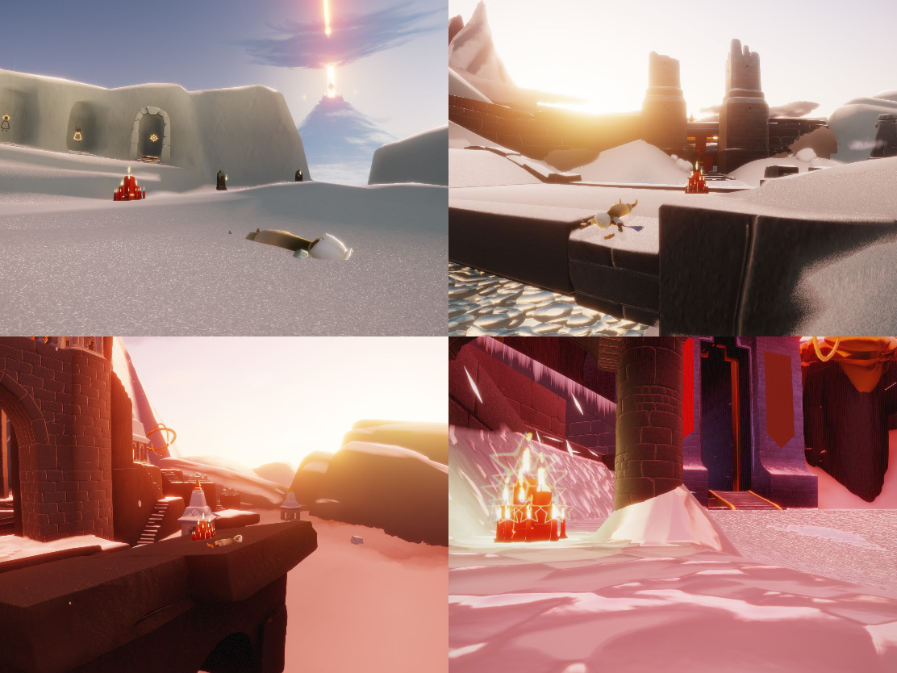

javascript disabled
today
無念
社畜
ピザ
つぼ
ネコ
宇宙
散歩
tomorrow
無念
社畜
ピザ
つぼ
ネコ
宇宙
散歩
草原(3)▶︎
["入口左手前","丸石奥","鳥の塔右奥","洞窟入口"]
["入口右奥","丸石右","4島中央","神殿内"]
["入口左奥","鳥の塔中央","洞窟内","神殿前"]
雨林(3)▶︎
["入口右手前","開拓地船","川&蟹木","晴れ間池"]
["入口左奥","開拓地奥木","墓所中央","神殿後"]
["入口右奥","川&蟹出口","墓所橋","晴れ間奥"]
峡谷(2)▶︎
["入口左","スケート橋","天球儀入口","ゴール左"]

["入口右奥","スケート氷","天球儀出口","ゴール右"]
捨て地(3)▶︎
["入口後ろ","祠出口","投石台手前","戦場砦右奥"]
["入口左奥","祠闇花","投石台中央","難破船後端"]
["入口右奥","投石台出口","難破船先端","戦場砦上"]
書庫(2)▶︎
["1F手前","1F奥","2F奥","6F手前"]
["1F右","2F扉左","4F祠","6F奥"]
大キャンドル参考元:
ティー
様
オフィス参考元:
Sky Wiki